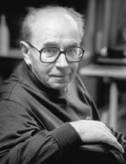
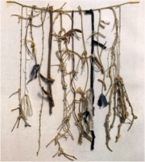

Lhoták: Básník Jiøí Koláø
|
JIØÍ KOLÁØ
* 24. 9. 1914 (Protivín)
† 12. 8. 2002 (Praha)
Jiøí Koláø byl vùdèí osobností Skupiny 42, která vznikla v dobì okupace. Po roce 1948 nemohl publikovat (kvùli básnické sbírce Prométheova játra strávil nìkolik mìsícù ve vìzení). V 60. letech se vìnoval experimentální poezii, ale pozdìji básnickou tvorbu nadobro opustil a plnì se zamìøil na vıtvarné umìní. Od roku 1981 il v Paøíi, odkud finanènì podporoval èeské umìlce. Ve svìtì se proslavil pøedevším svımi koláemi. Koláøùv lidskı pøíbìh i osud jeho díla je typickım pøíkladem konfliktu umìlce s totalitní spoleèností.
|

Jiøí Koláø
|
Koláø a Skupina 42
Koláøe uvedl do literatury František Halas, kterı podporoval zaèínající autory. S jeho pomocí vyšla roku 1941 Koláøova básnická prvotina Køestnı list. Koláø se stal èlenem Skupiny 42, jejím programem bylo zmapovat mìstskou periferii. Básníci z této skupiny pouívali nespisovné vırazy a psali volnım veršem. Pod silnım vlivem poetiky Skupiny 42 vznikaly Koláøovy básnické sbírky Sedm kantát, Limb a jiné básnì, Ódy a variace a Dny v roce, které vyšly a po válce. Kniha Roky v dnech u vyjít nemohla a básník byl umlèen a do roku 1957, kdy mu vyšla sbírka Mistr Sun o básnickém umìní.
|
Jiøí Koláø: Dny v roce a Roky v dnech
Knihy Dny v roce a Roky v dnech spolu úzce souvisejí. První je sbírkou básní, druhá deníkovıch záznamù. Koláø si pøedsevzal, e bìhem jednoho roku bude pravidelnì psát jednu báseò a prózu dennì. I kdy je celkovı poèet textù menší, podaøilo se mu zmapovat období od 18. února 1946 do 15. února 1947. Jeho básnì z tohoto období pøipomínají spíše záznamy nestranného pozorovatele. Aby byla zdùraznìna jejich dokumentárnost, jsou opatøeny pøesnım datem vzniku. Dny v roce ještì mohly vyjít, ale sazba Rokù v dnech byla rozmetána a kniha v Èechách vyšla a roku 1992.
|
Zánik Skupiny 42
Nástup komunismu v roce 1948 znamenal faktickı zánik mnoha umìleckıch uskupení. Nìkterá byla rozprášena, jinım byla znemonìna veøejná prezentace. Skupina 42 se rozpadla, protoe Ivan Blatnı emigroval, Jiøí Koláø nesmìl z politickıch dùvodù publikovat a Josef Kainar zaèal psát budovatelské básnì. Také vıtvarníci Lhoták, Gross nebo Hudeèek se vydali vlastními cestami.
Psal/a sis nìkdy deník? Jak dlouho ti to vydrelo?
K èemu je psaní deníku dobré?
Zkus si vést deník alespoò jeden mìsíc.
Co nového ses dozvìdìl/a o Koláøovi z jeho záznamù?
|
Koláø a 50. léta

Koláøùv stùl v praské kavárnì Slavia byl povìstnım centrem umìleckého dìní. Setkával se u nìj se svımi pøáteli a navštìvovali ho zde mladí adepti umìní, kterım se Koláø ochotnì vìnoval, podobnì jako František Halas jemu. Na fotografii jsou (zleva): Kamil Lhoták se synem, Josef Èermák, Josef Hiršal a Jiøí Koláø.
|
Jiøí Koláø: Prométheova játra
V básnické sbírce Prométheova játra pokraèoval Koláø v metodì, kterou vymyslel u døíve – jako „oèitı svìdek“ soustavnì zapisuje dobové události. Texty nemají názvy, ale jsou opatøeny datem vzniku. Kniha obsahuje básnì psané volnım veršem, prozaické texty a zajímavé experimenty, ve kterıch Koláø kombinuje dvì rùzná díla. Báseò Skuteèná událost byla inspirována dvìma texty – dìsivou prózou Ladislava Klímy Skuteèná událost zbìhnuvší se v Postmortalii a povídkou ofie Na³kowské U trati, na co autor upozoròuje i v doslovu.
Všichni pøemıšlejí o lidstvu a nikdo nemyslí na èlovìka
všichni mluví o knihách a nikdo neumí øíci poctivé slovo
všichni volají po sbratøení národù a nikdo neumí podat ruku
všichni budují a nikdo nevidí postavené
všichni si pøejí vzkøísit svìt a nikdo nevidí ivého
všichni bojují za práva svıch otcù a nikdo nevidí syny v otroctví
všichni horují pro mír a kadı zapomnìl co je to zemøít
pøirozenou smrtí
všichni jsou odhodlaní krvácet za lepší lidstvo a nikdo neví co je sám
všichni mluví o lásce a ádnı ji neví co znamenají slova:
Dobrı den nebo Dobrou noc
všichni pracují na nejvìtším díle dìjin a nikdo neví co dìlá
všichni kráèejí vpøed k záøící metì budoucnosti a nikdo neví kudy jde
všichni jsou ochotni padnout za vlast za kulturu za slávu svıch velikıch mrtvıch a nikdo neví co je obyèejnı stud
Jásající høbitov, 1. kvìten – 20. kvìten 1950. Sobota
|
|
Osud básnické sbírky Prométheova játra byl pro období totality velmi pøíznaènı. Koláø ji napsal v roce 1950, ale o jejím uveøejnìní nemohla bıt ani øeè, protoe øada básní pøímo nebo nepøímo napadala komunistickı reim. Rukopis sbírky tedy koloval pouze mezi jeho známımi. Pøi domovní prohlídce u kritika Václava Èerného objevila Koláøovy texty státní bezpeènost a básník strávil roku 1953 devìt mìsícù ve vyšetøovací vazbì a nakonec byl na stejné období odsouzen. Šlo o jedinı pøípad, kdy byl v Èechách odsouzen spisovatel za nevydané texty! Roku 1969 mìla sbírka koneènì vyjít, ale jejímu vytištìní zabránila nastupující normalizace. Poprvé byla publikována roku 1985 v exilovém nakladatelství manelù Škvoreckıch v Torontu. Doma vyšla a roku 1990.
Kolik let trvalo, nì mohla vyjít Prométheova játra?
Zaujala tì ukázka? Èím?
|
Koláø a 60. léta
Na pøelomu 50. a 60. let zaèal Koláø spolupracovat s Josefem Hiršalem. Vısledkem bylo pøevyprávìní a pøebásnìní Ezopovıch bajek, Schönbergovıch pøíbìhù o mìstì Kocourkov, nìmeckıch historek o Enšpíglovi a pøeklad Bürgerova Barona Prášila.
V této dobì vznikla i dvì Koláøova dramata – Mor v Athénách a Chléb náš vezdejší. Druhé mohlo vyjít pouze v nìmeckém pøekladu.
|
Jiøí Koláø: Marsyas
V básnické sbírce Marsyas Koláø zajímavì pracuje s nespisovnım jazykem a fonetickım pøepisem slov. Vzal napøíklad známé pøíbìhy z Bible (Šalomoun) nebo èeskıch bájí (Pøemysl a Libuše) a nechal moderního nevzdìlaného vypravìèe, aby je pøevyprávìl obecnou èeštinou ve stylu „jak mu zobák narost“.
|
Na èem je zaloena komika Koláøovıch textù?
Myslíš si, e jde o básnì? Proè?
Srovnej vyprávìní O moudrém Šalamounovi s pùvodním biblickım zpracováním.
Pøevyprávìj Koláøovy texty O Libuši a Pøemyslovi spisovnou èeštinou.
Kdo byl Epiktet? Jakı byl jeho náhled na svìt?
Co si myslíš o uvedenıch radách?
Budeš se jimi øídit? Proè?
Vyber si jednu z 16 rad Vršovického Epikteta a pouij ji jako motto pro slohovou práci.
Jak na tebe pùsobí ukázky z Koláøovy sbírky Marsyas?
Kdo byl Marsyas?
|
Koláø experimentátor
Ve druhé polovinì 60. let se Koláø seznámil s autory experimentální poezie – Josefem Hiršalem, Bohumilou Grögerovou, Ladislavem Novákem nebo Emilem Julišem. Zaèal tvoøit básnické návody a vizuální experimentální texty, které shrnul do sbírek Vršovickı Ezop, Novı Epiktet a Návod k upotøebení. Knihy Básnì ticha a Oèitı svìdek u nemohly vyjít kvùli nástupu normalizace.
Kdo byl Calder?

Koláø: Autoportrét
|
Jiøí Koláø: Básnì ticha
Sbírka Básnì ticha obsahuje pøedevším experimentální „básnì“, které vyuívají vizuální stránku textu. Koláø v nich hledá nové monosti psacího stroje – škrtá text, uká písmenka pøes sebe a vytváøí z nich nejrùznìjší obrazce. Z liter, které tvoøí pøíjmení nìjakého známého umìlce, napøíklad sestavil obrázek pøipomínající jeho dílo nebo nìjakı zajímavı geometrickı obrazec.

Koláø: Calder
Nìkteré „básnì“ ve sbírce Básnì ticha jsou sloeny vıhradnì z èíslic, z karet, ze zmuchlaného notového papíru, provázkù atd. Koláø si také pøedstavoval, jakou báseò by napsal slepec, analfabet nebo cvok. Pro tyto texty vymyslel nové originální názvy jako analfabetogram nebo cvokogram. Závìreèné stránky knihy vyplòují reprodukce Koláøovıch koláí, asambláí a fotografie prostorovıch objektù polepenıch potištìnım papírem. Básnì ticha tak mapují postupnı pøechod od obyèejného textu a k vıtvarnému artefaktu.
|
Koláø: Návod k upotøebení
Báseò ticha
Sesbírej
hromádku oblázkù
a sestav z nich
kdekoliv
i s nadpisem
oblázek za oblázkem
jako slovo za slovem
øádku za øádkou
jako verš za veršem
pohlednou báseò
Jak vznikla tato báseò?
Proè se jmenuje Báseò ticha?
|
Koláø vıtvarník

Koláø: Ornitologie moderního umìní
Koláøovy koláe
Koláø poprvé vystavoval své koláe v Burianovì Déèku roku 1937. V 60. letech se ke koláím vrací a soustavnì se jim vìnuje a do konce ivota. V duchu experimentální tvorby vnáší nové postupy i do vıtvarného umìní. Vymıšlí proláe (prouky vıtvarnıch reprodukcí sestavované k sobì v rùznıch variacích) nebo muchláe (zmuchlané reprodukce).
|
Jiøí Koláø vıtvarník
Normalizace Koláøovi pøipomnìla 50. léta, kdy nemohl publikovat. Jeho knihy zmizely z knihoven, èerstvì vytištìná monografie o Koláøovi z pera Miroslava Lamaèe se nedostala do knihkupectví. Koláø navíc podepsal Chartu 77. Reim se ho nakonec zbavil tím, e mu dovolil vycestovat na stipendijní pobyt do západního Berlína. Koláø se u nevrátil, od roku 1981 se natrvalo usadil v Paøíi a získal i francouzské obèanství. Jeho ena Bìla, s ní se oenil v roce 1949 a která byla také vıtvarnice, zùstala sama v Èeskoslovensku. Manel byl v nepøítomnosti odsouzen k jednomu roku vìzení a byl mu zabaven majetek. Koláø brzy dosáhl svìtového vìhlasu, ale na Èechy nezapomnìl – z Francie posílal peníze umìlcùm, kteøí doma nemohli publikovat (napøíklad Skácelovi). Po roce 1989 se vrátil domù, kde zaèaly vycházet jeho døíve zakázané knihy a Koláøovu vıtvarnou tvorbu pøedstavily rozsáhlé vıstavy.

Koláø: Stupnì vítìzù
|

Koláø: Rozhovor pan B. s panem R. v nebi (Pocta Baudelairovi)
Vytvoø kolá, prolá, muchlá nebo nìjakı vıtvarnı objekt po vzoru Jiøího Koláøe.
Srovnej Koláøovy koláe s koláemi dadaistù a surrealistù.
|
Internetové stránky
Koláø, informace
Koláø, ukázky
Koláø, ukázky
Koláø: Veèer
Sárközi: Básnì ticha Jiøího Koláøe, studie
Praks: Jiøího Koláøe poetika a estetika, studie
Rulf: Jiøí Koláø, èlánek
Rulf: Prometheova játra, èlánek

Koláø: Uzlová báseò
|
Doporuèená èetba
Hiršal, J., Koláø, J.: Enšpígl, Praha 1962 (volné zpracování starıch nìmeckıch textù)
Hiršal, J., Koláø, J.: Kocourkov, Praha 1959 (volné zpracování textù J. F. von Schönberga)
Hiršal, J., Koláø, J.: O podivuhodném ivotì mudrce Ezopa, kterı rozumìl øeèi ptákù, zvíøat, hmyzu, rostlin i vìcí, Praha 1960 (volné zpracování staroèeskıch textù)
Chalupeckı, Jindøich: Na hranicích umìní, Prostor a Arkıø, Praha 1990
Jiøí Koláø, Odeon, Praha 1993
Karfík, Vladimír: Jiøí Koláø, Èeskoslovenskı spisovatel, Praha 1994
Koláø, Jiøí: Básnì ticha, Èeskı spisovatel, Praha 1994
Koláø, J.: Èerná lyra, Návod k pouití, Marsyas, Z pozùstalosti pana A., Vršovickı Ezop, Èeská suita, Odeon, Praha 1993
Koláø, J.: Køestnı list, Ódy a variace, Limb a jiné básnì, Sedm kantát, Dny v roce, Roky v dnech, Odeon, Praha 1992
Koláø, J.: Mistr Sun o básnickém umìní, Novı Epiktet, Návod k upotøebení, Odpovìdi, Èeskı spisovatel, Mladá fronta a Odeon, Praha 1995
Koláø, J.: Ornitologie moderního umìní, Protis, Praha 1997
Koláø, J.: Prométheova játra, Èeskoslovenskı spisovatel, Praha 1990
Koláø, J.: Pøestupnı rok, Deník, Praha 1996
Koláø, J.: Tıdeník 1968, Torst, Praha 1996
Koláø, J.: Ven ze stránky, Union studio, Plzeò 1994
Koláøová, Bìla: Objekty a asambláe, Torst, Praha 1993
|
Vypracuj písemnı referát o nìkteré z uvedenıch knih.

Koláø: Ornitologie moderního umìní
|
|